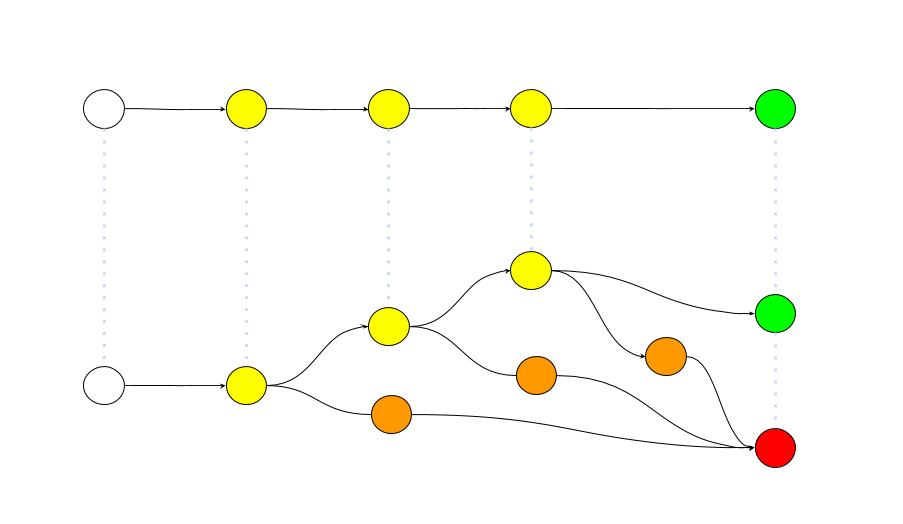
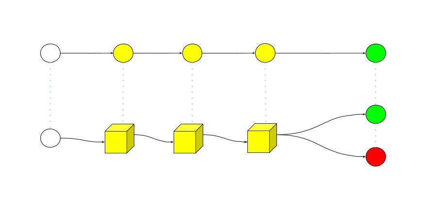
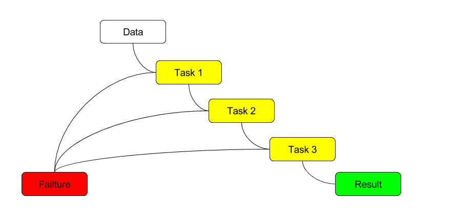
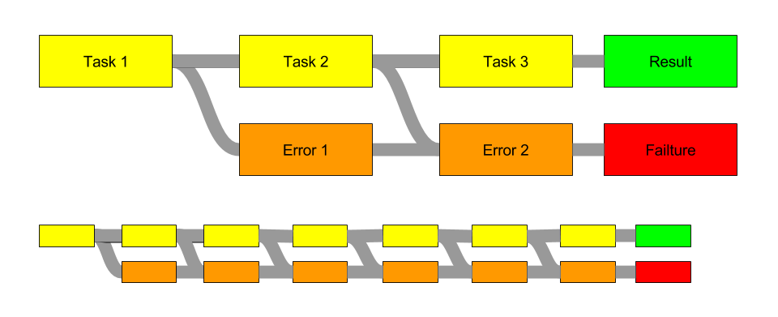

Created: 2016-07-28 Thu 16:50

(defn get-user-feed [term] {:pre [(-> term string?)] :post [(-> % string?)]} (-> term validate-name get-page-url get-htree get-data check-data-private (get-rss term) indent-str))
def div(a, b): if b == 0: return None else: return a / b
- Пачка проверок вида String countryName(String userId) { User user; Phone phone; String cc; Country country; return userid != null && (user = db.findUser(userid)) != null && (phone = user.getPhone) != null && (cc = phone.getCountryCode) != null && (country = Countries.findByCode(cc)) != null ? country.getName() : null }
try: res = a / b except ZeroDivisionError: res = 0
def div(a, b): if b == 0: return ZeroDivisionError(a, b), None else: return None, a / b err, res = div(10, 2) err, res = div(10, 0)
data = get_pair()[1] data = get_pair() # data first



x >>= getData >>= processData >>= printData
echo "foo" | util.py | script.pl | grep | sed > data.txt 2> error.log
def ediv(a, b): if b == 0: return Left("Div by zero") else: return Right(a / b) def esqrt(a): if a < 0: return Left("Negative number") else: return Right(math.sqrt(a)) EitherStrNum(16) >> (ediv, 4) >> esqrt >>> Right[2.0] EitherStrNum(16) >> (ediv, 0) >> esqrt >>> Left[Div by zero]
main :: IO main = do x1 <- action1 x2 <- action2 x3 <- action3 submit x1 x2 x3
def productName(maybeOrder: Option[Order]): Option[String] = {
for (val order <- maybeOrder;
val lineItem <- order.lineItem;
val product <- lineItem.product)
yield product.name
}
import scala.io.Source
import java.net.URL
def getContent(url: URL): Either[String, Source] =
if (url.getHost.contains("google"))
Left("Requested URL is blocked for the good of the people!")
else
Right(Source.fromURL(url))
getContent(new URL("http://google.com")) match {
case Left(msg) => println(msg)
case Right(source) => source.getLines.foreach(println)
}
def parseURL(url: String): Try[URL] = Try(new URL(url))
val url = parseURL(Console.readLine("URL: ")) getOrElse new URL("http://duckduckgo.com")